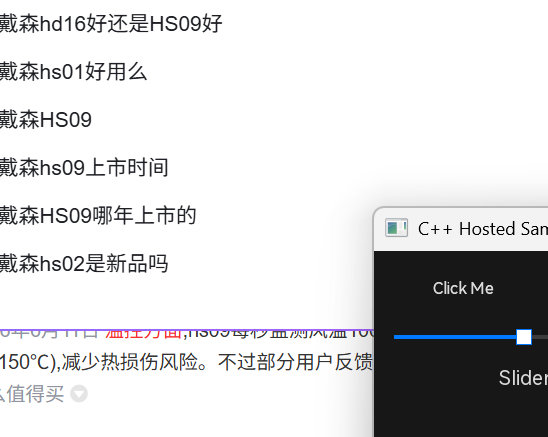
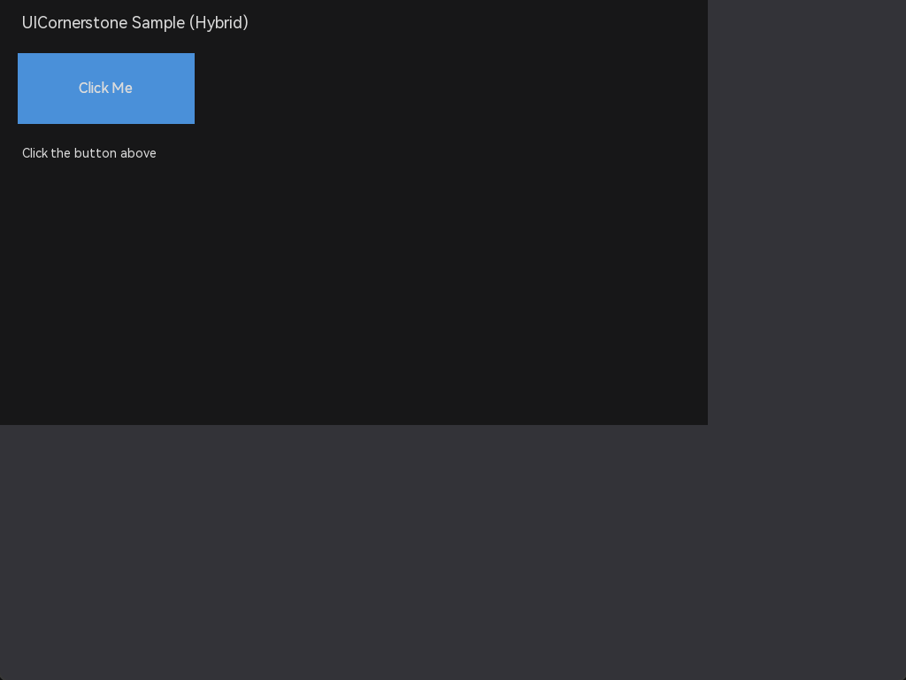

UICornerstone 用户手册
跨后端 C++ 即时模式 UI 库 —— 一套代码，SDL3 / SFML / raylib 三后端任意切换
C++17
CMake 3.16+
GPL-3.0
20+ 控件
声明式 JSON 布局
C ABI / C++ Binding
1 介绍
UICornerstone 是一个从零构建的跨后端 GUI 库，采用「核心库 + 后端插件」架构：核心实现全部与图形后端无关（渲染经 RenderDevice / Texture / TextRenderer / InputBackend 四层抽象），同一套代码可在 SDL3、SFML、raylib 三种后端上运行。
核心特性
- 四层后端抽象：RenderDevice（绘制原语）、Texture（纹理）、TextRenderer（文本）、InputBackend（输入）——换后端零业务代码改动。
- 声明式 UI：JSON 布局文件描述控件树、布局引擎（流式/锚点/网格）、事件绑定与主题样式，支持热加载。
- 20+ 控件：Button、CheckBox（三态）、EditBox、TextArea（多行）、ComboBox、NumericUpDown、Slider、ScrollBar、ProgressBar、Menu、ColorPicker、Splitter、WinFrame、Dialog/Popup、HandleControl 等。
- LuotiAni 动画引擎：基于 JSON 关键帧描述（translate/scale/rotate/opacity/visible + 缓动与轨迹），支持多实例共享烘焙帧数据。
- 三种集成方式：C ABI 动态库（纯 C 调用）、C++ Binding（现代 C++ 封装）、核心 + 后端源码混合编译。
- 多实例 / 多视口：一个进程多个独立 UI 实例、多窗口与子视口渲染（按后端能力位条件化）。
- 焦点系统：Tab 环、焦点边界（WinFrame 内循环）、Ctrl+Tab 焦点作用域切换、焦点环绘制。
- 高 DPI：内置
dpiScale机制，布局与渲染自动适配。
1.1 架构总览
| 层 | 职责 | 目录 |
|---|---|---|
| 核心库 | 控件树、事件系统、焦点管理、布局引擎、JSON 解析、动画引擎 | include/ + src/ |
| 后端插件 | SDL3 / SFML / raylib 各自的窗口、输入、渲染适配 | src/backend/ |
| C ABI | 纯 C 接口：实例管理、布局加载、控件工厂、属性系统、回调 | include/UICornerstoneAPI.h |
| C++ Binding | 类型安全封装：UICornerstone、Control、Event | binding/ |
| 样例与测试 | 4 种集成模式样例、全量自动化测试 | samples/、test/ |

C++ Binding Hosted 样例（sample_cpp_hosted）

混合集成样例（sample_fromsource，核心 DLL + 后端源码）
1.2 阅读路线
- 第一次接触：先读 快速起步，把第一个窗口跑起来。
- 想用 C++ Binding 写界面：从基础入门 全程带你走。
- 想用 JSON 声明界面：直接跳到 声明式 UI。
- 需要具体控件：深入控件 每控件一页，含全部方法 / 属性 / 回调 / JSON 语法 / 样例。
- 遇到问题：查 问题定位手段 与 FAQ。
1.3 目录导览
基础
深入控件
本手册对应仓库
docs/ 目录，与 design/（设计文档）互补：手册讲「怎么用」，设计文档讲「为什么这么设计」。